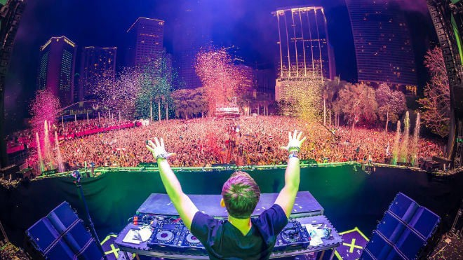

Drag & Drop Website BuilderPop là thể loại âm nhạc phổ biến nhất trên thế giới, nổi bật với giai điệu bắt tai, dễ nhớ và phù hợp với nhiều đối tượng người nghe. Những bài hát Pop thường có cấu trúc đơn giản nhưng hiệu quả, dễ tạo trend và lan truyền mạnh trên mạng xã hội.
Không chỉ mang tính giải trí cao, Pop còn phản ánh xu hướng âm nhạc hiện đại qua từng thời kỳ. Nhiều nghệ sĩ lớn đã thành công nhờ dòng nhạc này, trong đó có Taylor Swift – người đã góp phần định hình Pop hiện đại với hàng loạt bản hit đình đám.
👉 Nếu bạn mới bắt đầu nghe nhạc, Pop là lựa chọn dễ tiếp cận nhất.
Rap/Hip-hop là thể loại âm nhạc mang đậm cá tính và sự tự do trong thể hiện. Thay vì tập trung vào giai điệu, Rap chú trọng vào lời ca, nhịp điệu và cách truyền tải thông điệp. Nội dung thường xoay quanh cuộc sống, xã hội, cảm xúc cá nhân hoặc những góc nhìn rất riêng của nghệ sĩ.
Dòng nhạc này ngày càng phát triển mạnh và có ảnh hưởng lớn đến giới trẻ. Những rapper nổi tiếng như Eminem đã đưa Rap lên tầm cao mới với kỹ thuật và khả năng storytelling cực kỳ ấn tượng.
👉 Nếu bạn thích sự mạnh mẽ, khác biệt và “chất”, Rap là lựa chọn phù hợp.
EDM là thể loại nhạc điện tử sôi động, thường được sử dụng trong các lễ hội âm nhạc, club hoặc sự kiện lớn. Điểm đặc trưng của EDM là nhịp beat mạnh, drop gây “bùng nổ” cảm xúc và khả năng khiến người nghe muốn nhún nhảy theo.
EDM không chỉ là âm nhạc mà còn là trải nghiệm – đặc biệt khi nghe trực tiếp tại các festival. Những DJ nổi tiếng như Alan Walker đã tạo ra nhiều bản hit toàn cầu với phong cách âm thanh độc đáo.
👉 Nếu bạn thích không khí sôi động, năng lượng cao thì EDM là lựa chọn hoàn hảo.

Ballad là thể loại nhạc nhẹ nhàng, sâu lắng và giàu cảm xúc. Giai điệu thường chậm, tập trung vào giọng hát và nội dung lời ca, đặc biệt là những câu chuyện về tình yêu, nỗi buồn hoặc kỷ niệm.
Ballad rất phù hợp để nghe khi thư giãn, suy nghĩ hoặc vào những lúc tâm trạng. Tại Việt Nam, nhiều ca sĩ như Sơn Tùng M-TP cũng có những bản Ballad rất thành công, tạo được sự đồng cảm mạnh mẽ với người nghe.
👉 Nếu bạn thích cảm xúc và sự nhẹ nhàng, Ballad chắc chắn dành cho bạn.
Drag & Drop Website Builder